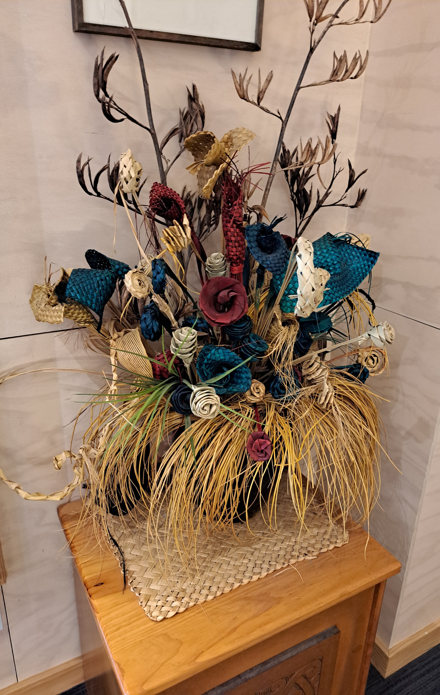
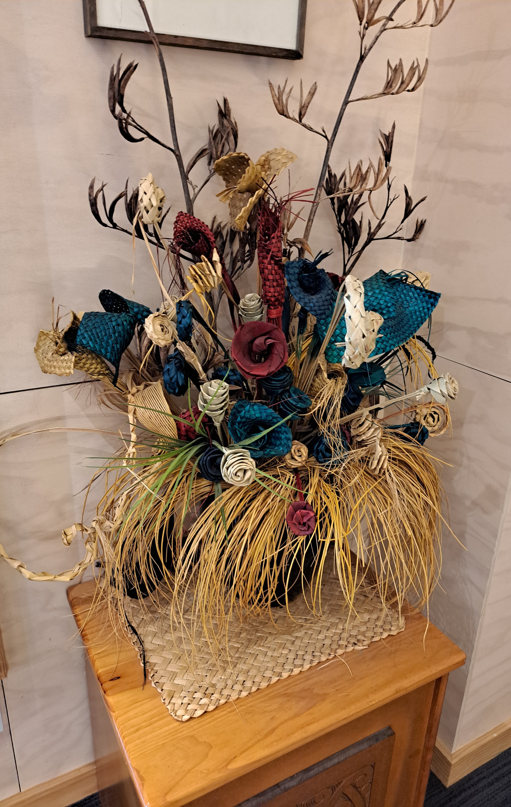
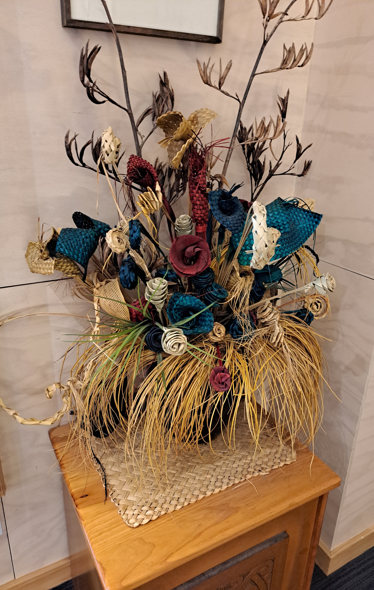

There are over 500 pools and 65 geyser vents, each with their own name, are found in the 70 hectare Te Whakarewarewa geothermal valley in Rotorua. Our traditional Maori explanation of Te Whakarewarewa Geothermal Valley states that this place was one of the area’s ‘Te Pupu’ and ‘Te Hoata’, the Goddesses of Fire, emerged from the earth’s core while trying to find their brother Ngātoro-i-rangi, who was stranded on Mount Tongariro. As they rose to the surface looking for their brother, they left part of the fire they carried, creating geysers, hot springs and mud pools, creating the geothermal activity that remains today.
Read more...Our main geyser is called “Pohutu” which means “Big splash” and erupts up to heights of 30 meters. Pohutu is semi-predictable, as she plays 15-20 minutes after another of our active geysers. According to Maori culture, geysers are viewed as gifts from the gods To the left of Pohutu (when viewing from the bridge) is the “Prince of Wales Feathers” Geyser – named after Prince Edward Albert visited here in the 1900’s.
Read more...In 1967, the first intake to the National Carving School began the task of learning the disciplines of their Māori ancestors. Among those students was Clive Fugill, the man who would become master carver of the institute today.
Read more...
